Becoming Friends with Your Camera
Project 0 · Ariq Koh · CS180, Fall 2026 · shot on iPhone 17 Pro
1. The selfie 2. Perspective compression 3. Dolly zoom
1. The selfie, up close and stepped back
I took a close-up on the front camera at arm's length, then another from about 2 m with the zoom brought in to match the framing.
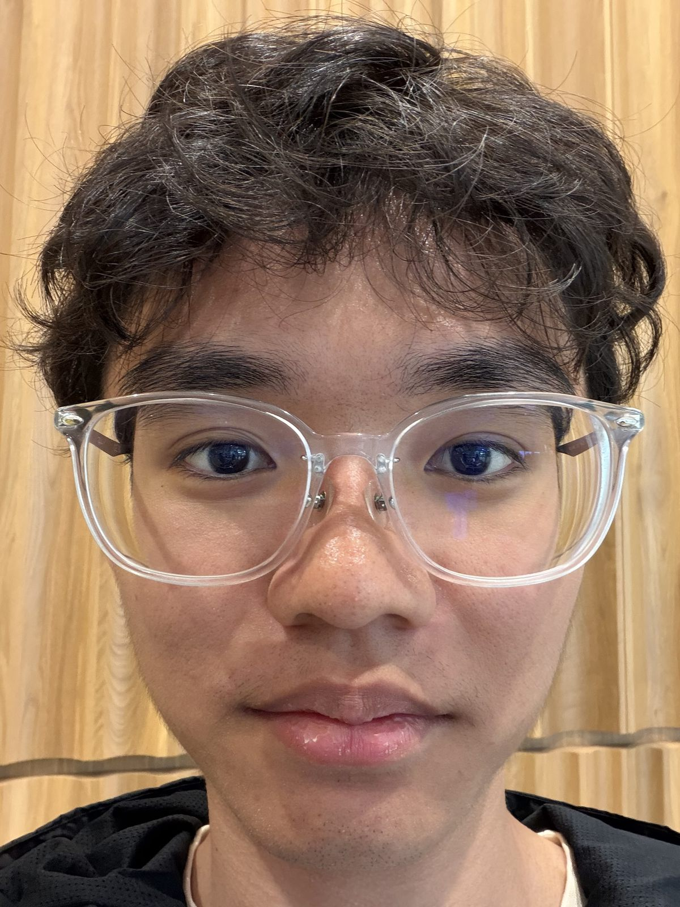
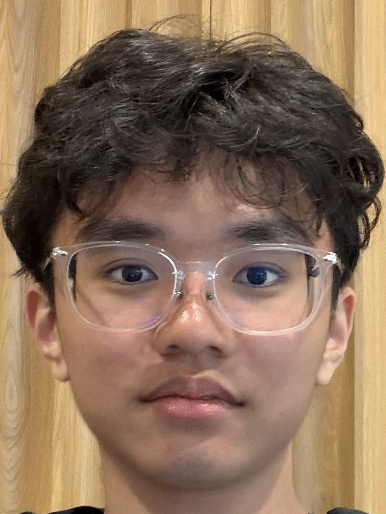
2. Perspective compression
I shot the Doe Library facade from across the lawn, then again from the foot of the steps, reframing so the building stayed about the same size.
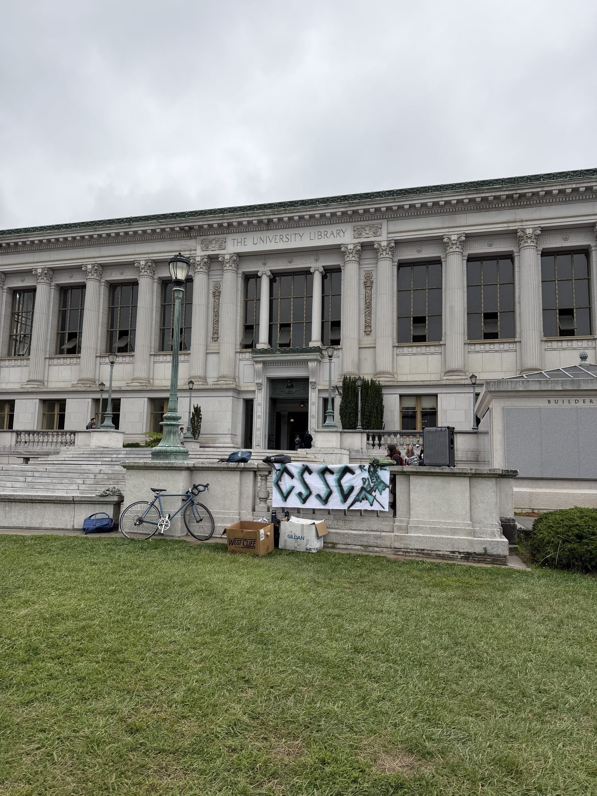
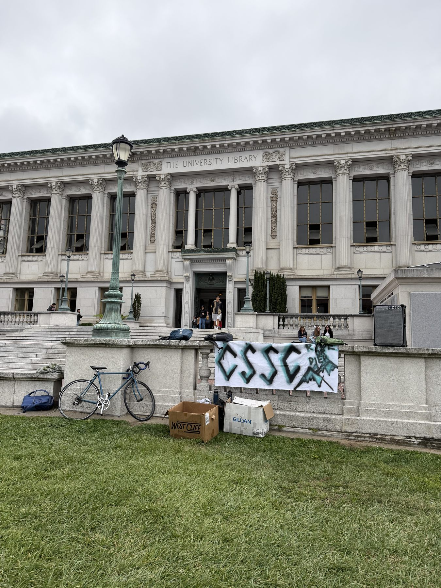
3. Dolly zoom
I took six frames of the California Hall entrance, zooming in while walking backwards to keep the doorway the same size. The animation aligns the frames on the doorway and loops.
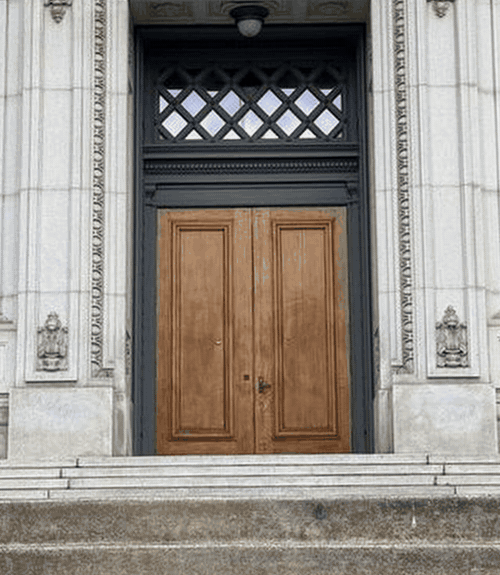
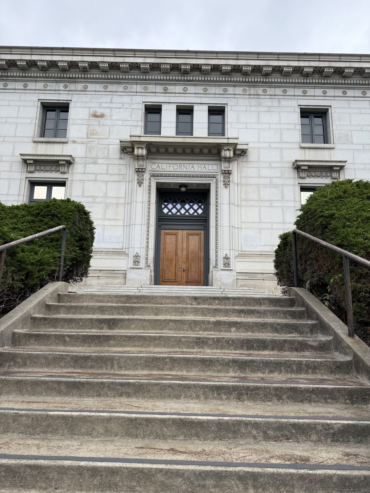
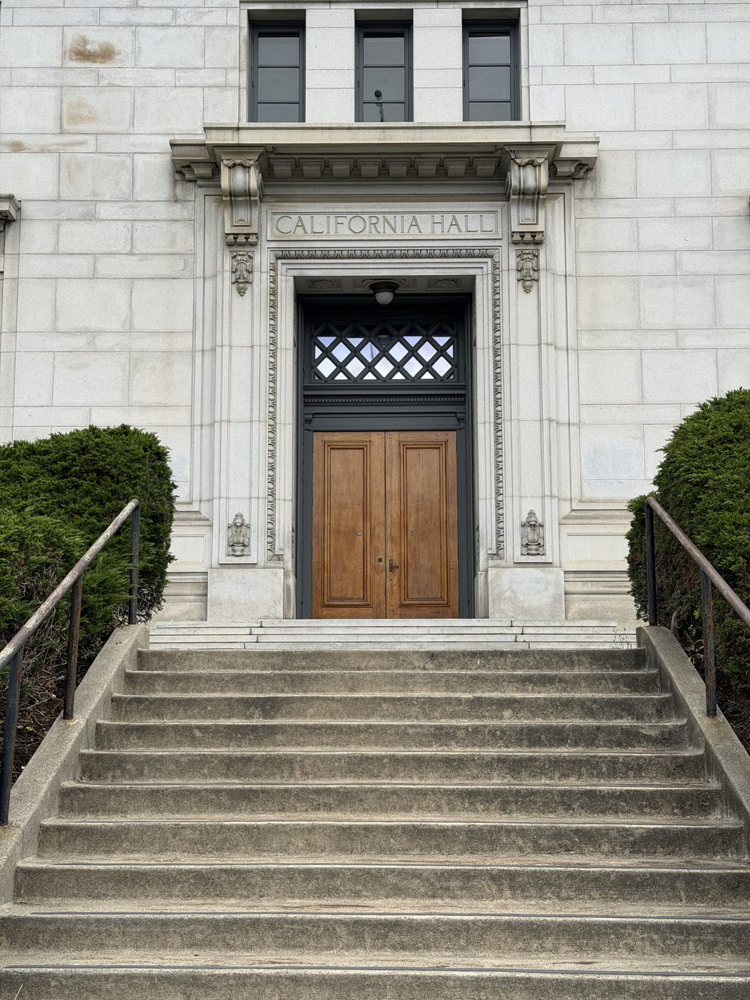
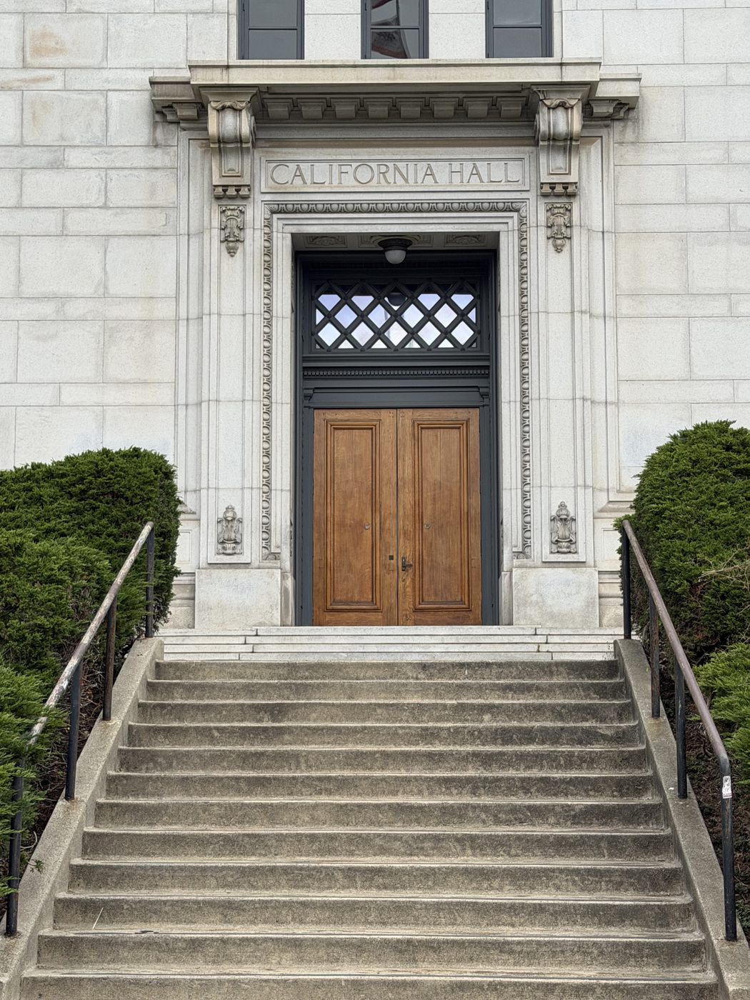
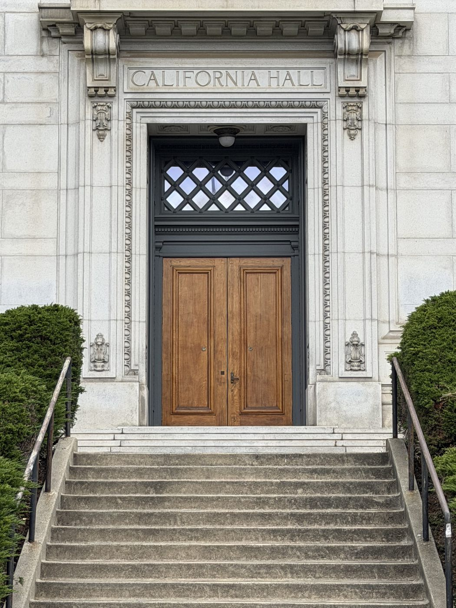
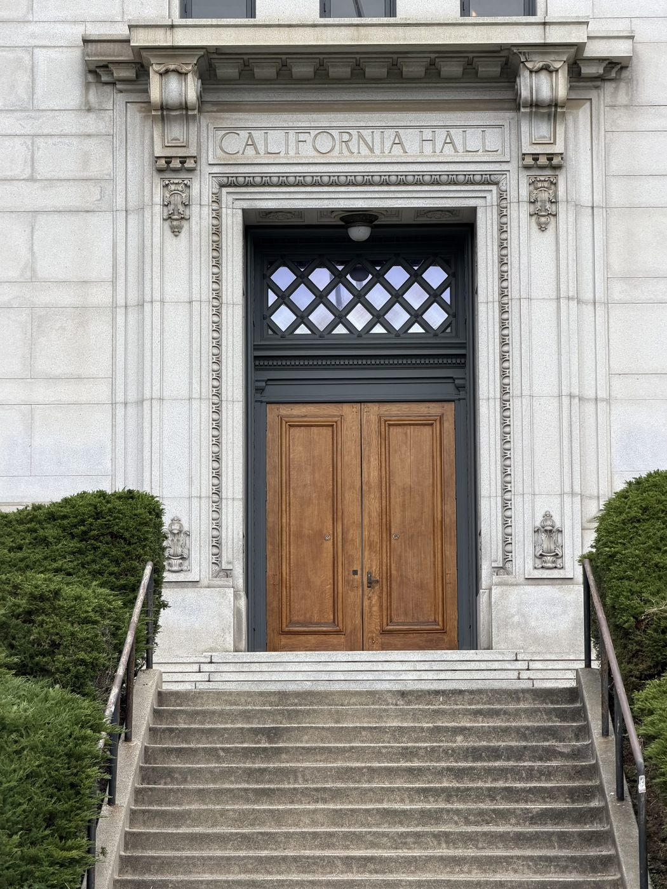
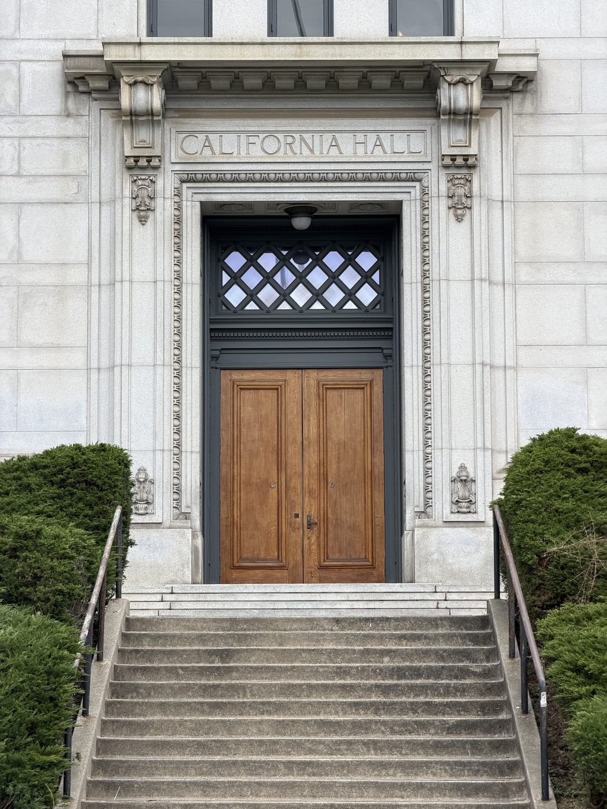
Figure 4. The same six frames in order, before I aligned them.